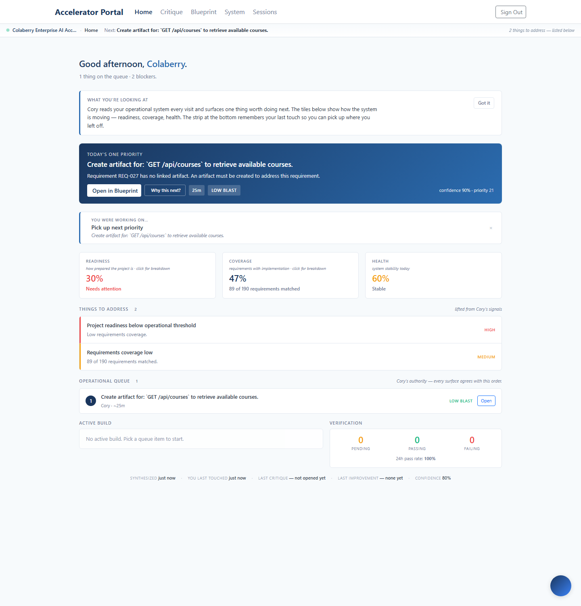
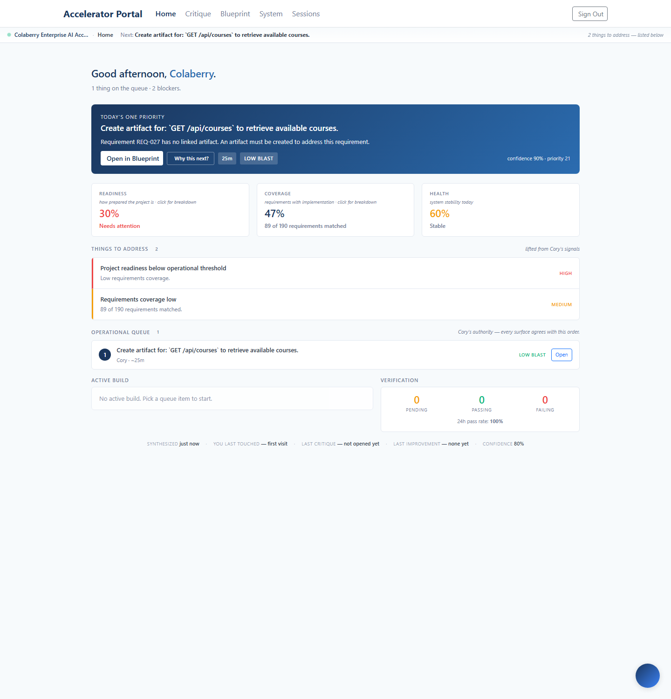
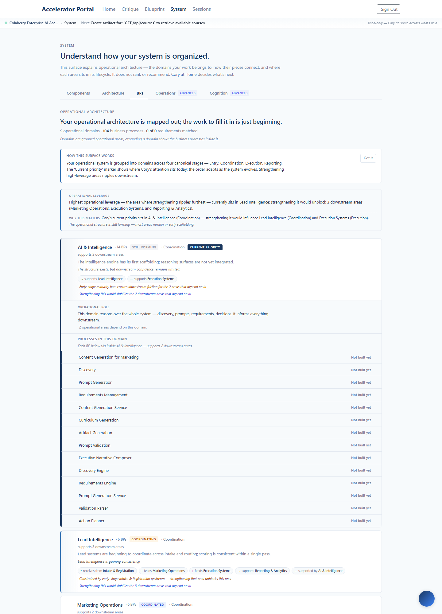
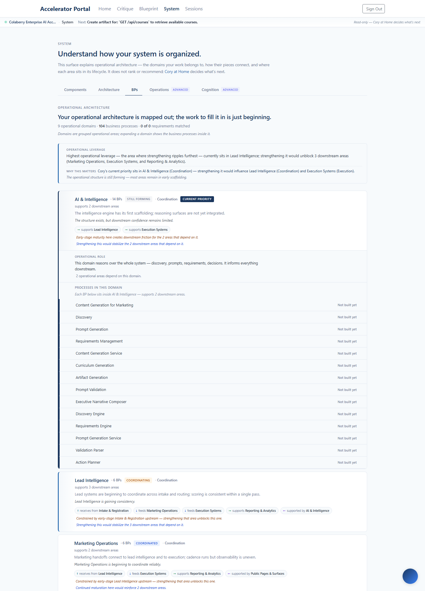
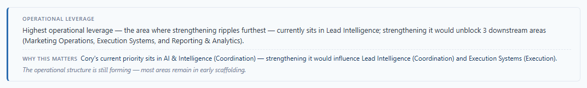

Shipped 2026-05-16 to enterprise.colaberry.ai
(commits 0eb4f2f + 1b9f725 + e3d2f64).
Three bounded additions for first-time operators: ambient first-visit
framing cards on Cory Home and System BPs, plus three surgical
explanatory clauses in existing canonical sentences. No tutorials,
no tours, no modals, no tooltip proliferation. The cards dismiss
once and never return.
An experienced operator landing on Cory Home or System BPs sees:
An experienced operator reads this fluently. A first-time operator gets sophisticated surface signal without embedded explanation of any of the vocabulary.
The constraint set ruled out every standard onboarding pattern: no tours, no modals, no tooltips everywhere, no LMS, no AI-chat onboarding spam. The only viable shape: ambient, embedded, dismissible.
A small calm card at the top of /portal/home,
above the priority card. Sole gate: memory.seenIntros.home.
Visible until the operator clicks "Got it"; then never returns.
Body:
Cory reads your operational system every visit and surfaces one thing worth doing next. The tiles below show how the system is moving — readiness, coverage, health. The strip at the bottom remembers your last touch so you can pick up where you left off.
Live in production:

After dismiss — surface returns to its default rhythm with no trace of the card:

frontend/src/components/workspace/FirstVisitFramingCard.tsx — calm card with eyebrow + body + "Got it" dismiss button. ~117 lines.useWorkspaceMemory.ts — new seenIntros: { home?, systemBps? } field + markIntroSeen(surface) writer + pure render-gate helper shouldShowFirstVisitFraming (extracted for pure-logic testing).workspaceMemory:v1 shape; cross-tab sync via existing storage listener.firstVisitFraming.test.ts: first-visit + no dismiss → show; not first-visit → don't show; dismissed → don't show; per-surface independence; both-dismissed silence; explicit-false vs undefined.Same component, different surface. Sits between the editorial
header and the leverage block. Independent dismiss state
(memory.seenIntros.systemBps).
Body:
Your operational system is grouped into domains across four canonical stages — Entry, Coordination, Execution, Reporting. The "Current priority" marker shows where Cory's attention sits today; the order adapts as the system evolves. Strengthening high-leverage areas ripples downstream.

After dismiss — surface returns to its default rhythm:

Three single-clause additions to existing canonical sentences, chosen to explain the highest-value-but-least-self-evident terms inline. Discipline: bounded by plan to maximum three; anything more becomes verbose.
| # | Where | What was added |
|---|---|---|
| 1 | operationalLeverage.ts — leverageHeadline constrained_downstream branch |
Mid-sentence em-dash clause "the area where strengthening ripples furthest" inside the existing "Highest operational leverage…" sentence. Explains "leverage" inline without a separate definition. |
| 2 | BPDomainSurface.tsx — editorial header |
One trailing italic sentence: "Domains are grouped operational areas; expanding a domain shows the business processes inside it." Frames the BP/domain hierarchy for first-time scanners. |
| 3 | BPDomainSurfaceRows.tsx — pathway chip hover title-attr |
Enriched from "Canonical operational pathway stage for {label}" to "{label} sits in the {stage} stage of the operational pathway (Entry → Coordination → Execution → Reporting)." No visual change — revealed on hover only. |
Leverage block with the new explanatory clause (item #1) visible inline:

Reviewed the live surfaces after Phases A + C. Three terms still assume insider context. None shipped as fixes — each touches operator-decision territory or would require non-trivial new infrastructure. Logging for the next planning round.
next_action titles use domain-specific jargon like "Create artifact for: GET /api/courses" — the word "artifact" reads as technical jargon to an outside reader.next_action.title, or (b) frontend post-processing to rewrite the title. Both are larger than a one-line fix.The framing card is the only addition to the surface. After dismiss, the page is byte-identical to its pre-onboarding-sprint state (modulo Phase C's three small clauses). No persistent tooltips, no modal overlays, no "next" buttons, no progress dots, no chat-bot avatars, no tour spinner.
The dismissed-state captures (Stops 2 and 3) prove the surface returns cleanly to its default rhythm. No residual UI elements from the onboarding work.
Footprint:
| Onboarding addition | Footprint after dismiss |
|---|---|
| FirstVisitFramingCard on Home | Zero — component returns null |
| FirstVisitFramingCard on System BPs | Zero — component returns null |
| Phase C leverage clause | Embedded in existing sentence (no new DOM element) |
| Phase C editorial header trailing sentence | One italic line — calm enough to fade visually once known |
| Phase C pathway-chip hover title-attr | Zero visual footprint (revealed on hover only) |
First-time operators now get an embedded ambient explanation on each of the two main entry surfaces, plus three surgical explanatory clauses inside the canonical operational vocabulary. Once dismissed, the surface looks exactly as it did before. Three remaining insider terms logged for operator decision in the next planning round.
Sprint-specific learning: the timing-based first-visit detection was tried, deployed, and didn't work in production — React strict- mode + state-poll lifecycle defeated the useRef freeze. The simpler "show until dismissed" gate is robust and arguably better UX (existing operators get the same one-time courtesy as new operators).